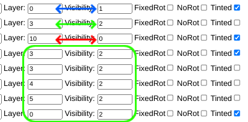

While making a skin, the editor has these feature to keep your rotors organized: Layering and Visibility
These two features help you for doing transitions between stances and to give your skin the right volume.
In visibility, the editor allows you to:
If you want your rotors to still show up when idle and moving, make the value of visibility 0. If you don't want this, then you'll choose between 1 and 2, so the rotor you chose will only show up in one stage, depending on what you want to do with your skin animation. For making it visible while moving choose 1, and for making it visible while still make it 2.
Always make sure the rotors gets a number here, if you leave it blank it will automatically change to 0
Another important step to make sure your rotors are well organized is the Layering of the rotors. When uploading rotors, the editor allows you to choose in which layer one rotor will be, either in the highest layers or in the lowest one. If you want your rotor in the lowest layer, make the value 0. From that, choose ahigher* number for the other rotors so they appear on the highest layers.
If you choose a value similar to one from another rotor, the highest one in the order of rotors will be over the other one.
Both Layering and Visibility are important at the final touches of your skin. Sometimes the rotors look well placed once moving but seems different when idle because one rotor disappeared or a new one is there. Although visibility doesn't affect the layering, always check it before using the skin to avoid these troubles. For example, this is an image from the rotors of Golden Claw.
